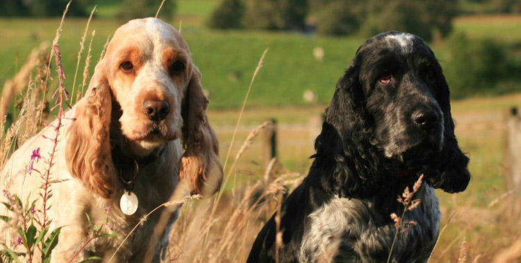
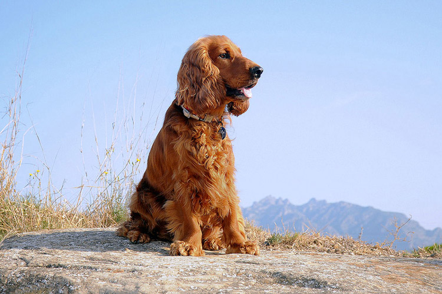

Английский кокер-спаниель

Английский кокер-спаниель — самая мелкая из охотничьих пород спаниелей. С одной стороны английские кокер-спаниели близки к таким рабочим породам как спрингер и кламбер-спаниели, с другой стороны от них ведут свое происхождение американские кокер-спаниели — сугубо декоративная порода собак.
Порода английских кокер-спаниелей зародилась конечно же в Англии, где собаки подобного типа были известны еще в средние века. Первые спаниели восходят к средневековым водяным собакам, которые в свою очередь родственны легавым. Поначалу между разными породами спаниелей не существовало четких границ, собак делили скорее по фенотипу (внешним признакам), а не по происхождению. Нередко более крупных щенков в помете относили к спрингер-спаниелям, а более мелких к кокер-спаниелям. Само слово кокер происходит от английского названия вальдшнепа, в охоте на которого специализировались эти собаки. К концу XIX века английские кокер-спаниели окончательно выделились в отдельную породу и в 1902 г. был разработан стандарт английских кокер-спаниелей (весьма строгий). Сейчас в этой породе выделяют два типа собак — рабочие, с несколько упрощенным экстерьером и выставочные, с немного утрироваными породными чертами.
Английский кокер-спаниель — небольшая собака, высота в холке у кобелей 39-41 см, у сук 38-39 см, вес 13-14,5 кг. Голова крупная, правильной формы, череп выпуклый, морда длинная, с тупым обрезом. Глаза большие, темные. Уши длинные, висячие, мягкие. Грудь глубокая, не слишком узкая. Спина прямая, широкая. Лапы умеренной длины, с толстыми подушечками и небольшими перепонками между пальцами. Хвост купируется, при купировании хвост не должен быть обрезан ни слишком длинно, ни слишком коротко. Шерсть у английского кокер-спаниеля очень мягкая, шелковистая, с блеском, на большей части тела шерсть короткая и прямая, а на ушах и нижней части лап длинная и курчавая. У спаниелей выставочного типа по сравнению с рабочими собаками сильнее выражен переход ото лба к морде, и шерсть на лапах и ушах более густая и курчавая. Окрас английских кокер-спаниелей допускается любой — черный, черно-подпалый, серый, черно-пегий, рыже-пегий, золотисто-рыжий и красный. Однако в разных странах существуют локальные предпочтения собакам того или иного окраса, например, в Восточной Европе распространены английские кокер-спаниели золотисто-рыжего окраса. Чисто-белый окрас в породе встречается редко и считается нежелательным, так как может сочетаться с врожденной глухотой.
Нрав у английских кокер-спаниелей очень живой и веселый. Эти собаки обладают неисчерпаемым запасом энергии, которую изливают на окружающих ежедневно. Английские кокер-спаниели преданны хозяину, послушны и в общем доброжелательны, однако некоторые представители породы могут иногда проявлять агрессию. Рабочие линии этой породы прекрасно работают по водной дичи.
Кому не стоит заводить английского кокер-спаниеля:
- ленивым — прекрасная шерсть этой собаки требует тщательного ухода, к тому же у спаниелей могут быть проблемы с ушами, а белые кокер-спаниели могут родиться глухими. Если вы хотите пустить содержание собаки на самотек кокер-спаниель не для вас.
Кому следует заводить английского кокер-спаниеля:
- новичкам — те, кто впервые заводит собаку, имеет смысл обратить внимание на эту породу: дружелюбный, общительный и неприхотливый кокер-спаниель простит все ошибки;
- охотникам — те, кто ходит на охоту или любит прогулки в лесу, найдут в лице этой собаки верного помощника и друга.
Несмотря на то, что английские кокер-спаниели неприхотливы и легки в содержании, людям впервые сталкивающимся с этой породой нужно учесть некоторые особенности. Английские кокер-спаниели подвержены заболеваниям ушей, требуют ухода за шерстью, важен и правильный выбор щенка (некоторые линии могут быть агрессивны). Чтобы не допустить ошибок нужно проконсультироваться у профессиональных заводчиков, которые специализируются на разведении именно этой породы.
Вверх